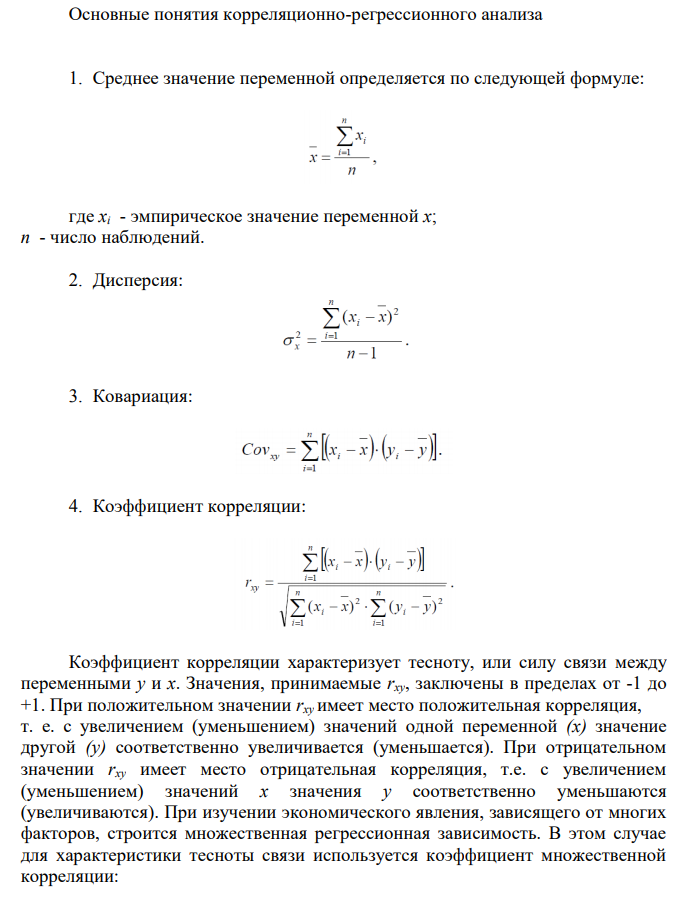
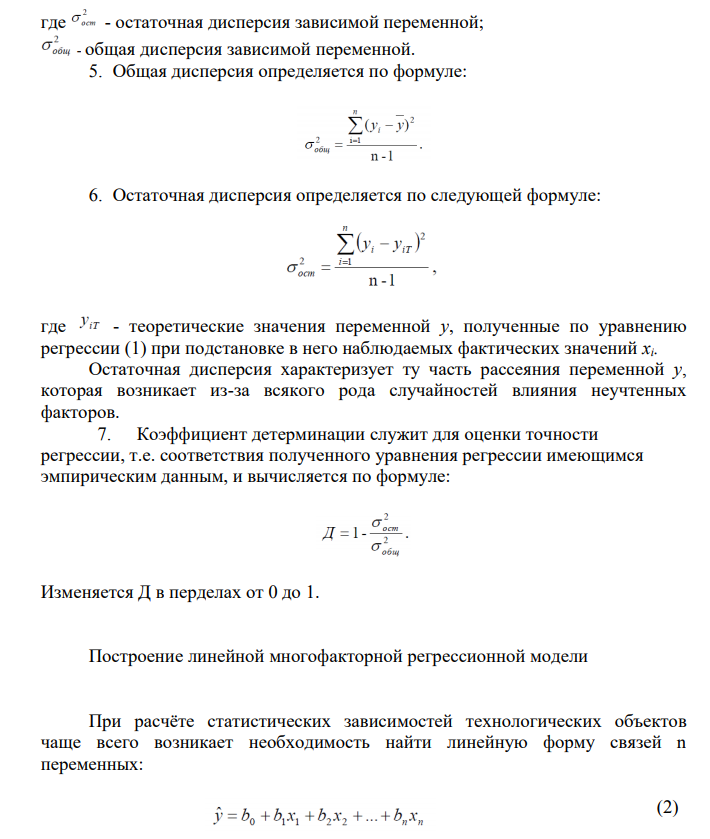
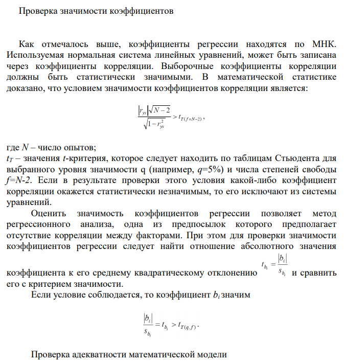
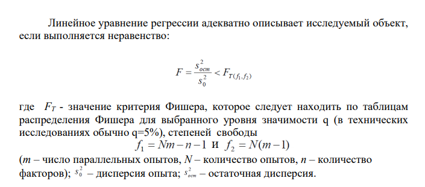

Прогноз осуществляется для оценки неизвестного параметра в будущем периоде времени или в
неисследованной части пространства. При прогнозировании используют два понятия:
1. Предсказание – суждение о будущем состоянии процесса (или состоянии процесса в
неисследованной части пространства), основанное на субъективных оценках качественных и количественных
факторов.
2. Прогнозирование – оценка параметра в будущем периоде или в неисследованной области
пространства на базе эвристических и математических методов. Эвристические методы базируются на
использовании трудно формализуемых или не формализуемых явлений или процессов.
Задачи регрессионного анализа:
1. Установление формы зависимости (линейная или нелинейная; положительная или отрицательная и т.
д.).
2. Определение функции регрессии и установление влияния факторов на зависимую переменную. Важно
не только определить форму регрессии,
указать общую тенденцию изменения зависимой переменной, но и выяснить, каково было бы действие на зависимую
переменную главных факторов, если бы прочие не изменялись и если бы были исключены случайные элементы. Для
этого определяют функцию регрессии в виде математического уравнения то го или иного типа.
3. Оценка неизвестных значений зависимой переменной, т. е. решение задач экстраполяции и
интерполяции. В ходе экстраполяции распространяются тенденции, установленные в прошлом, на будущий период.
Экстраполяция широко используется в прогнозировании. В ходе интерполяции определяют недостающие значения,
соответствующие моментам времени между известными моментами, т. е. определяют значения зависимой переменной
внутри интервала заданных значений факторов.
Рассмотрим подробнее регрессию.

  